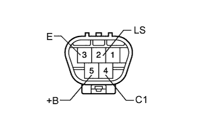
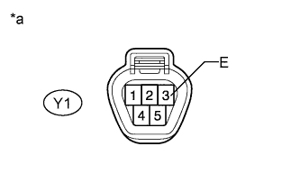
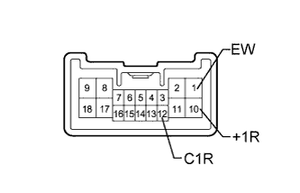

WIPER AND WASHER SYSTEM > Rear Wiper does not Operate |
| 1.READ VALUE USING INTELLIGENT TESTER (GLASS HATCH COURTESY SWITCH) |
Use the Data List to check if the glass hatch opener is functioning properly (Click here).
| Tester Display | Measurement Item/Range | Normal Condition | Diagnostic Note |
| Glass Hatch Courtesy Switch | Glass hatch courtesy switch signal / ON or OFF | ON: Glass hatch open OFF: Glass hatch closed | - |
|
| ||||
| OK | |
| 2.PERFORM ACTIVE TEST USING INTELLIGENT TESTER (REAR WIPER MOTOR) |
Using the intelligent tester, perform the Active Test (Click here).
| Tester Display | Test Part | Control Range | Diagnostic Note |
| Rear Wiper Power Supply | WASHER RR relay operation | ON/OFF | - |
|
| ||||
| OK | ||
| ||
| 3.INSPECT WASHER RR RELAY |
 |
Remove the WASHER RR relay from the engine room relay block, junction block.
Measure the resistance according to the value(s) in the table below.
| Tester Connection | Condition | Specified Condition |
| 3 - 5 | Battery voltage is not applied to terminals 1 and 2 | 10 kΩ or higher |
| Battery voltage is applied to terminals 1 and 2 | Below 1 Ω |
|
| ||||
| OK | |
| 4.CHECK HARNESS AND CONNECTOR (WASHER RR RELAY - BATTERY) |
 |
Remove the WASHER RR relay from the engine room relay block, junction block.
Measure the voltage according to the value(s) in the table below.
| Tester Connection | Condition | Specified Condition |
| WASHER RR relay terminal 2 - Body ground | Engine switch on (IG) | 11 to 14 V |
| WASHER RR relay terminal 2 - Body ground | Engine switch off | Below 1 V |
| WASHER RR relay terminal 5 - Body ground | Always | 11 to 14 V |
| *a | Front view of wire harness connector (to WASHER RR Relay) |
|
| ||||
| OK | |
| 5.CHECK HARNESS AND CONNECTOR (MAIN BODY ECU - WASHER RR RELAY AND BODY GROUND) |
Remove the WASHER RR relay from the engine room relay block, junction block.
Remove the main body ECU (Click here).
Measure the resistance according to the value(s) in the table below.
| Tester Connection | Condition | Specified Condition |
| G46-20 (PWMR) - WASHER RR relay terminal 1 | Always | Below 1 Ω |
| A-11 (GND1) - Body ground | Always | Below 1 Ω |
| G46-20 (PWMR) - Body ground | Always | 10 kΩ or higher |
|
| ||||
| OK | |
| 6.CHECK HARNESS AND CONNECTOR (WASHER RR RELAY - REAR WIPER MOTOR ASSEMBLY) |
Disconnect the Y1 rear wiper motor connector.
Remove the WASHER RR relay from the engine room relay block, junction block.
Measure the resistance according to the value(s) in the table below.
| Tester Connection | Condition | Specified Condition |
| Y1-5 (+B) - WASHER RR relay terminal 3 | Always | Below 1 Ω |
| Y1-5 (+B) - Body ground | Always | 10 kΩ or higher |
|
| ||||
| OK | |
| 7.INSPECT REAR WIPER MOTOR ASSEMBLY |
|  |
Remove the rear wiper motor (Click here).
Check that the rear wiper motor assembly operates when the battery voltage is applied between the terminals.
| Tester Connection | Specified Condition |
| Battery positive (+) → Terminal 5 (+B) Battery negative (-) → Terminal 2 (LS) Battery negative (-) → Terminal 3 (E) | Motor operates at low speed (LO) |
| Battery positive (+) → Terminal 5 (+B) Battery negative (-) → Terminal 4 (C1) Battery negative (-) → Terminal 3 (E) | Rear wiper motor operates intermittently |
|
| ||||
| OK | |
| 8.CHECK HARNESS AND CONNECTOR (REAR WIPER MOTOR ASSEMBLY - BODY GROUND) |
|  |
Disconnect the Y1 rear wiper motor connector.
Measure the resistance according to the value(s) in the table below.
| Tester Connection | Condition | Specified Condition |
| Y1-3 (E) - Body ground | Always | Below 1 Ω |
| *a | Front view of wire harness connector (to Rear Wiper Motor Assembly) |
|
| ||||
| OK | |
| 9.INSPECT WINDSHIELD WIPER SWITCH ASSEMBLY |
|  |
Remove the windshield wiper switch connector (Click here).
Measure the resistance according to the value(s) in the table below.
| Tester Connection | Switch Condition | Specified Condition |
| 12 (C1R) - 1 (EW) | OFF | 10 kΩ or higher |
| 10 (+1R) - 1 (EW) | OFF | 10 kΩ or higher |
| 12 (C1R) - 1 (EW) | LO | Below 1 Ω |
| 10 (+1R) - 1 (EW) | HI | Below 1 Ω |
|
| ||||
| OK | |
| 10.CHECK HARNESS AND CONNECTOR (WINDSHIELD WIPER SWITCH ASSEMBLY - REAR WIPER MOTOR ASSEMBLY AND BODY GROUND) |
Disconnect the Y1 rear wiper motor connector.
Disconnect the G50 windshield wiper switch connector.
Measure the resistance according to the value(s) in the table below.
| Tester Connection | Condition | Specified Condition |
| Y1-2 (LS) - G50-10 (+1R) | Always | Below 1 Ω |
| Y1-4 (C1) - G50-12 (C1R) | Always | Below 1 Ω |
| G50-1 (EW) - Body ground | Always | Below 1 Ω |
| Y1-2 (LS) - Body ground | Always | 10 kΩ or higher |
| Y1-4 (C1) - Body ground | Always | 10 kΩ or higher |
|
| ||||
| OK | ||
| ||